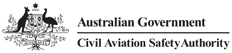

From: applications@casa.gov.au
To: admin@fireflyaviation.com
Subject: myCASA - Certificate variation application

25 Oct 2020
ARN: 7654321
Dear Firefly Aviation,
You have recently submitted a certificate variation application.
After review and assessment, an additional fee of $360 is required to complete your certificate variation application.
In order to complete your application, you must login to myCASA to pay the additional fee.
You can view the status of your submission anytime by viewing the Submission Summary section in myCASA
Kind regards,
Civil Aviation Safety Authority
CASA\Client Services Centre
p: 131 757 e: applications@casa.gov.au
16 Furzer Street, Phillip ACT 2606
GPO Box 2005, Canberra ACT 2601
www.casa.gov.au